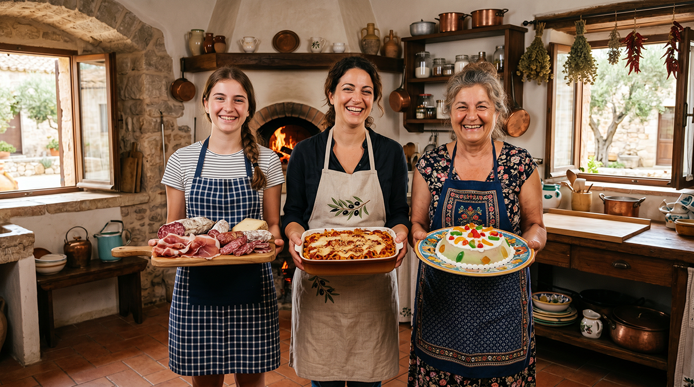
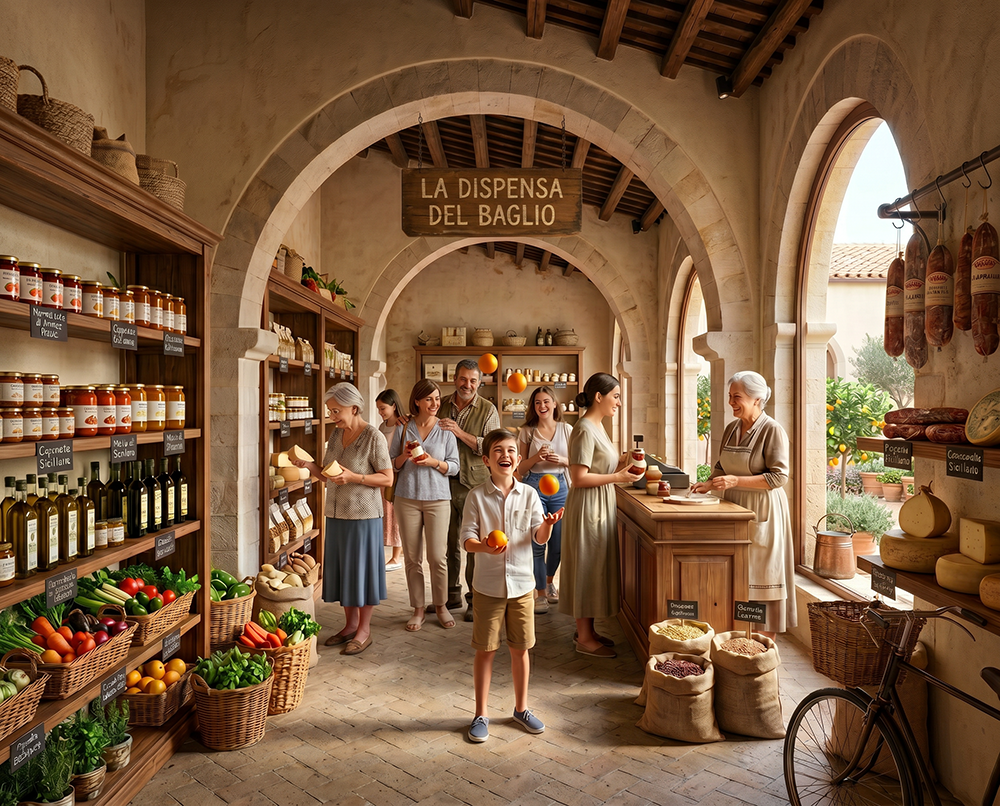

Thinking outside the box
A far-sighted choice

Baglio San Michele is not just another village or farmhouse regeneration project. It is not a “1-euro house” initiative, not a diffused resort, not a luxury restoration and not a seasonal tourist village.
It is a model of stable intentional community, designed to last over time, rooted in Sicilian tradition and built on principles of shared responsibility, anti-speculation and transparency.
How we are different
It is not a museum-village or “1-euro houses”
Many regeneration projects offer houses at symbolic prices without any community pact. The result is often second homes empty in winter and weak communities.
It is not a resort or diffused hotel
Tourist villages and diffused hotels depend on seasonality. Our model is designed for stable year-round residence.
It is not an isolated luxury restoration
Baglio San Michele combines high-quality housing with a collective project of life, work and relationships.
It is not superficial sustainability
Here sustainability is real: progressive self-sufficiency in food, shared resource management and a governance model that protects the common good in the long term.

What makes our model unique
Stable residence vs seasonal tourism
Here people live all year round. Families stay, children grow up, the elderly are active members. There are no second homes empty for ten months a year.
Selection and clear agreements
Entry is not open to everyone. There is a path of mutual discovery (application, interview, visit, trial period). This ensures alignment of values and shared responsibility.
Governance and anti-speculation
The Chapter of the Savi and the anti-speculative clauses protect the project from speculative drifts and ensure that the common good prevails over individual interests.
Internal transition mechanism
Those who purchase an apartment in Phase 1 can, in the future, return the unit and have its value recognized when purchasing a larger farmhouse.
Baglio San Michele was born from the conviction that in an era of strong economic and social uncertainty there are concrete alternatives: places where one can live stably, work, raise children and grow old together, within a cohesive community rooted in the territory.
It is not an experiment. It is a model designed to last, with clear rules, shared values and a long-term vision.